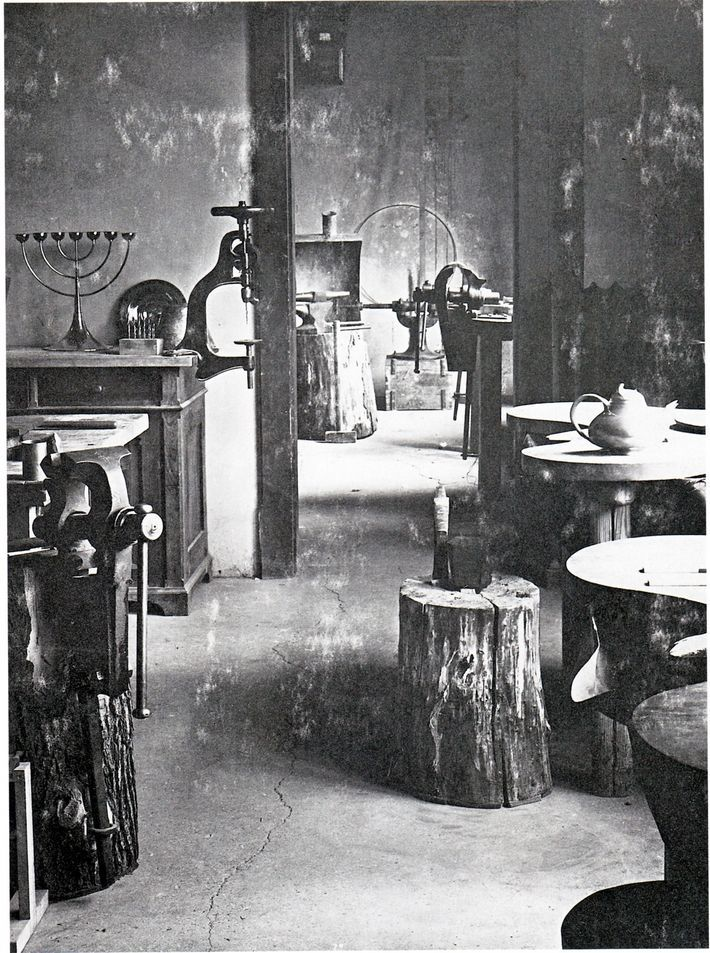

"Bauhaus bir fikirdi. Onun dünyadaki tüm ilerici okullar üzerindeki
büyük etkisinin temelinde, onun bir fikir olma gerçeğinde yatmaktadır.
Böyle bir etkiye ne bir organizasyonla, ne de propagandayla
ulaşılabilir. Yanlızca bir fikrin böyle bir etki yapma gücü vardır ki,
geniş yankılar uyandırabilsin."
-Ludwig Mies van der Rohe, 1957
19. yüzyılın sonları 20. yüzyılın başlarında ortaya çıkan hızlı teknolojik gelişmeler, savaşların ortaya çıkardığı yıkımlar, imparatorlukların parçalanması, krallıkların yok olması yerlerini yeni oluşumlara bırakmıştır. Bu dönemde sanat tartışmaları yoğunlaşmış sanatın toplumsal yönü, sanatın işlevselliği sorgulanmaya başlanmıştır. Sanat alanında da geleneksel kalıpların kırılarak yeni ve farklı tarz arayışları olarak değerlendirebileceğimiz modern sanat anlayışı egemen olmaya başlamıştır.
Romantizmle başlangıç yapan modern sanatın, izlenimcilikle genişleyerek yayıldığını ve Paul Cezanne’la birlikte rotasını bulup ilerlediğini söyleyebiliriz. Cezanne 1901’de yapmış olduğu resimlerinde doğayı küp, silindir ve koni şeklinde geometrik parçalara ayırarak Kübizm akımının öncülüğünü yapmıştır. Picasso ve Braque gibi sanatçılar da Cezanne’ın bu anlayışını geliştirip devam ettirmişlerdir. Sanattaki gelişmeler bilimi etkilemiş, bilimin getirmiş olduğu teknolojik gelişmeler de sanata ivme kazandırmıştır.
Kübist sanatçılar, doğa biçimlerini parçalayıp geometrik formlara dönüştürerek soyutlamaya gitmişlerdir. Mondrian ise, Kübizmi soyut sanat olarak değil soyutlayıcı sanat olarak adlandırmıştır. 20. yüzyılın ilk otuz yılında, toplumda yaşanan olaylara ve kültürel değişimlere paralel olarak Kübizm, Fovizm, Ekspresyonizm, Fütürizm, Dadaizm, Ready-Made, Konstrüktüvizm ve Sürrealizm gibi sanat akımları ortaya çıkmıştır. Bu dönemde yaşanan endüstri ve teknolojideki gelişmeler, estetik biçimlemeye ihtiyaç duyulmasına neden olmuştur.
Birinci Dünya Savaşından sonra sanat eğitimini kökten etkileyen bir kurum olan Bauhaus, endüstrileşmenin ayrıştırdığı sanatsal, teknik ve üretimsel bölümlerin birlikteliğini yeniden oluşturma uğraşlarının önemli bir noktasında 1919 yılında Walter Gropius tarafından Almanya’da Weimar şehrinde kurulmuştur.
Bauhaus anlayışı, uygulamalı sanatlar ile güzel sanatlar arasındaki engeli ortadan kaldırarak her iki uğraş alanının karşılıklı etkileşmesine uygun bir ortam hazırlamayı amaçlamıştır. Bauhaus’da amaç, sadece zanaatkâr yetiştirmek olmamış; sanatla zanaatı birleştirerek uygulanan eğitim ve öğretimin esası, kişisel becerileri geliştirecek atölye sistemi üzerine oluşturulmuştur.
Atölyeler araştırma laboratuvarları gibi kullanılmış, endüstrinin gereksinimi olan modüller, bu atölyelerde hazırlanmıştır.
{{}} Bauhaus'ta Metal Atölyesi, Weimar, 1923 yazı.Bauhaus’ta ilk defa endüstrinin gereksinimlerini karşılama amacıyla tasarımlar hazırlanarak, tekstil, cam, metal, baskı ve seramik atölyelerinde prototipler yapılmış, fabrikalarda üretimler gerçekleştirilmiştir. Toplum, ilk kez sanatçılar tarafından hayata geçirilen bu tasarımları günlük yaşamda kullanma fırsatını bulmuştur.
Bauhaus’daki eğitim-öğretim süreci üç bölümden oluşuyordu:
Uygulamalı öğretim fikri, farklı bir ders programı ortaya çıkarmıştır. Atölye çalışmaları öncelikli konumdadır. Farklı atölyelerde öğrenciler usta-çırak ilişkisine dayalı uygulama yapmaktadır. Bu yöntemler dünyadaki sanat ve tasarım öğretimini köklü bir dönüşüme uğratmıştır. Bauhaus, endüstri ürünleri tasarımı öğrenimi veren ilk kurum olarak günümüzde bu disiplinin temelini oluşturmuştur. Bauhaus, kurucusu Walter Gropius, “sanat ve endüstriyi birleştirmeyi amaçladı böylelikle Bauhaus, endüstri çağı düşüncesinin oluşturduğu bir eğitim merkezi oldu.”
1907’de kurulan Deutscher Werkbund, Alman tasarımının temellerini oluşturmuştur. Endüstrileşen dünyada, sanayinin mükemmelleşmesi hedefi ile sanayici, tasarımcı ve zanaatkârı bir araya getiren bir birliktir.
IX. yy’ın ortasından itibaren ortaya çıkan akımlardan belki de hiçbiri, ürünler üzerinde Bauhaus’un form dili kadar etkili olup, hayatımıza bu derece yoğun yansımamıştır.
Bauhaus, disiplinlerarası tasarım okulu olarak geliştirdiği deneysel müfredat ve yenilikçi öğretim uygulamaları ile çağdaş endüstri ürünleri tasarımının temelini oluşturmuştur. Sanayi ile uyum sağlamayı hedeflediğini belirten bir açılış manifestosu yayımlamış, gündelik yaşam için tasarlanacak sanayi ve sanatın sentezi ürün tasarımları yapmayı amaç edinmiştir. Gündelik hayata yönelik ürünler tasarlamışlardır; kahve fincanından, kentsel tasarıma kadar, çağdaş yaşamı her yönüyle ele almış, kullanım ürünlerini yeniden yorumlamışlardır.
Bauhaus’un bugün bile endüstri ürünleri tasarımı eğitimi üzerinde etkileri yoğun olarak sürmektedir. “En önemli özelliklerinden biri; makinelerden yararlanmayı benimsemesi, endüstrinin olanaklarını yadsımayarak endüstriyel üretim koşullarına uygun bir sanat eğitimi vermesidir. Bu da onu ilk gerçek endüstri tasarımı okulu durumuna getirmiştir.”
Dessau’ya taşındığında okul endüstriyel işlevselliği benimsemiş, eğitim sistemi farklılaşmıştır. Devlet desteğini yitirmesi, okulu kendini finanse edecek çözümler bulmaya yöneltmiştir. Bu dönemde okulun kendi tasarımlarını üretip, satışını yapması, okulun zanaattan endüstriyel fonksiyonalizme geçişine sebep olmuştur. Bauhaus’un 1929’da Basel ve Mannheim’da açtığı, tasarımlarını tanıtma amaçlı gezici sergi büyük ilgi görmüştür. 1933 yılında Nazilerce kapatılması sonucunda Bauhaus’un eğitmenleri Almanya’dan kaçarak başka ülkelere sığınmış, sığındıkları ülkelerde açılan tasarım okullarına öncülük ederek Bauhaus prensiplerini bu okullarda uygulamışlardır. (Soner, 2002: 10-11)
Ülkemizde Cumhuriyet ile başlayan yeni dönemde, birçok alanda (sanayi, tarım, eğitim, bilim ve teknoloji) atılımlar yapılmıştır. Bu yeni yapılandırmada sanat eğitimi de kendine düşen payı almıştır. Cumhuriyet’in kalkınma hamlesinde eğitim kuramlarına ihtiyaç vardır. Bu yüzden eski eğitim kurumları gözden geçirilir, kuramlar yeniden düzenlenmiştir. Eğitimi yeniden düzenlemek için yurt dışından uzmanlar getirilmiştir. 1956-57 yıllarında İstanbul’da Tatbiki Güzel Sanatlar Yüksek Okulu kurulmuştur. Böylece Bauhaus’un ülkemizdeki yansımaları sanat eğitiminde uygulama alanı bulmuştur (Çobanlı, 1995:32). Okulun mimariden dekorasyona ve plastik sanatlara kadar geniş bir alanda etkileri görülür. Özellikle tasarım ve tasarımcı sorununun çözümünde Bauhaus felsefesi ve eğitim programları referans alınmıştır.
İDGSA (İstanbul Devlet Güzel Sanatlar Akademisi) Resim bölümü başkanı Leopold Levy; Heykel Bölümü Başkanlığı'na Rudolf Belling; Bruna Taut ve Robert Vorhölzer gibi ünlü adlar da Mimarlık Bölümü Başkanlığı’na getirilmiştir.
Bauhaus’un temel düşüncesi ve tasarım anlayışı bir eksen olarak önce kendi dönemini, daha sonra Ulm Tasarım Yüksek Okulu ve Alman endüstrisinin katkılarıyla Alman tasarım kültürünü, dolaylı olarak da modern çağın tasarım kültürünü etkilemiştir. Bauhaus hareketi, geçmişte olduğu gibi bugün de sanatın radikal bir biçimde modernize edilmesi amacını taşımaktadır. Bauhaus aslında, geleceğin inşası olan bir ütopyanın, bütün sanat alanlarını aynı potada buluşturmasıdır. Sanat ve zanaat bir uyum içerisinde birbirlerine bağlanmasıyla serbest ve uygulamalı sanat arasındaki ayrım da ortadan kalkmıştır. Bauhaus akademik eğitim sistemine sırt çevirmek suretiyle ve biçimlendirme esaslarını yeniden düzenlemiştir. Özellikle atölyeyi modern endüstri biçimindeki yapılandırmalar için öne çıkartarak ve favori olarak göstererek sanat eğitimi alanını yeniden düzenlemesi ile gerçek sanatsal tavrı ortaya koyabilmişlerdir.
Bauhaus bir fikirdi. Onun dünyadaki tüm ilerici okullar üzerindeki büyük etkisinin temelinde, onun bir fikir olma gerçeğinde yatmaktadır. Böyle bir etkiye ne bir organizasyonla, ne de propagandayla ulaşılabilir. Yanlızca bir fikrin böyle bir etki yapma gücü vardır ki, geniş yankılar uyandırabilsin. -Ludwig Mies van der Rohe, 1957**Bu makalenin ilk hali Markut Sayı: 03, Kasım 2020'de Atahan Göktürk Güner tarafından hazırlanmıştır. Ekleme, çıkarma ve güncelleme yapılarak Sayı: 15'te Aralık 2021 sayısı Şahsenem Göksu Göktürk ile birlikte hazırlanmıştır.
"Bauhause Tasarım Okulu” Atatürk Üniversitesi Sosyal Bilimler Enstitüsü Dergisi 2014 18: 105-120 Serap BULAT, Mustafa BULAT, Barış AYDIN
“Endüstri Ürünleri Tasarımı Disiplininde Bauhaus Etkileri” Mimarist Dergisi sayı: 66 s.17-24 Meltem Özkaraman Şen
https://monoskop.org/Bauhaus
https://tr.wikipedia.org/wiki/Bauhaus
https://en.wikipedia.org/wiki/Bauhaus
https://www.andrews.edu/~wkunze/german/german-american/notable/B/bauhaus/bauhaus-e.html
https://www.dezeen.com/2018/11/08/bauhaus-furniture-designs-chair-tables-chess-set-baby-cradle/
https://www.anothermag.com/design-living/11471/the-bauhaus-most-iconic-designs-explained
https://www.connectionsbyfinsa.com/the-ten-best-examples-of-bauhaus-furniture-design/?lang=en
Evdeyiz Dergisi Şubat-Mart-Nisan 2020, Sayı 6, Sayfa 108
Grafik Tasarım Dergisi Mart - Nisan 2011 Sayı 41 Sayfa
Yüksek Lisans Tezi S.Elvan Ekren, Türkiye'de Bir Eğitim Modeli "BAUHAUS" Sayfa 30-52
Yüksek Lisans Tezi Yasemin İspirli Gönülkırmaz, Bauhaus'un Türkiye'deki İç Mekan Tasarımına Yansımaları, Sayfa 35-90